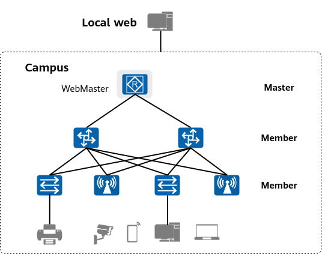
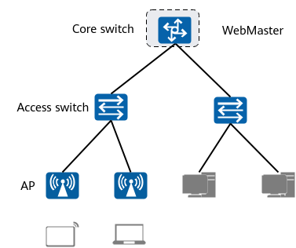

WebMaster Solution Overview
As digital transformation advances, campus networks face the following new challenges: inefficient deployment, difficult O&M, and complex management. To address these challenges, Huawei developed the WebMaster Solution. WebMaster is an integrated network management platform. You can log in to WebMaster and perform simple web operations to achieve unified O&M and management of devices on the entire campus network.
WebMaster Network Architecture
WebMaster provides a localized network management solution and enables you to implement unified visualization, management, and control of the entire campus network by logging in to one device on a campus network.
In the WebMaster Solution, devices are classified into the following roles:
- Master device: a device on which WebMaster is deployed. It provides automated management of the entire network. Typically, the core switch or gateway is the master device.
- Member device: other devices managed by the master device.
Figure 1 WebMaster network architecture
WebMaster Functions
The WebMaster Solution provides visualization, one-click operations, and automation functions for small and midsize campuses and branches.
- Visualization
- Topology visualization: The management PC can log in to WebMaster from any location on the network. The topology in the management VLAN, namely, VLAN 1, can be automatically discovered, including the network topology, device model, device status, and interface status.
- Health visualization: WebMaster measures the running status of the entire network and presents the CPU usage, memory usage, chassis temperature, and fan status. In addition, it can visualize key alarms on the entire network.
- One-click operations
- One-click provisioning: WebMaster allows you to create VLANs based on the wizard, including wired network parameters (such as VLANs and DHCP), wireless network parameters (such as SSIDs), and network-wide management username and password.
- One-click upgrade/patching: WebMaster provides one-click batch upgrade capabilities for the entire network, including one-click upgrade of devices of a specific model on the entire network.
- One-click faulty device replacement: WebMaster allows for one-click replacement of a faulty device by one of the same model, without any configuration made.
- Automation
- Automated discovery: WebMaster can automatically discover NEs and the physical topology. In addition, NEs can be automatically authenticated and managed.
- Automated diagnosis: WebMaster can automatically detect loops caused by incorrect connections, eliminate the loops, and display loop elimination results in the topology view.
Typical Application Scenarios of WebMaster
- Small or midsize campus/branch
A small/midsize campus or branch network consists of several to hundreds of devices, including switches and APs. The entire network is classified into the access layer and core layer. Currently, manual deployment, configuration, and O&M are used in most cases. This leads to inconvenient use and a low efficiency. As shown in Figure 2, the WebMaster network management function can be deployed on the core switch, and no dedicated server is required for deploying a network management system. WebMaster uses the Ubiquitous Autonomous Link (UAL) to automatically discover and manage devices on the entire network, implementing network-wide management, batch configuration, and visualized O&M.
Figure 2 Typical networking of small or midsize campuses/branches
Key Technologies of WebMaster
- Automatic discovery: The UAL is used to automatically discover, authenticate, and manage devices on the entire network using Constrained Application Protocol (CoAP).
- WebMaster-enabled devices discover each other and elect the master device.
- The master device uses the UAL to automatically discover network-wide NEs, authenticates and manages the NEs, collects and synchronizes network-wide physical topology information, and synchronizes topology changes in real time.
- WebMaster supports configuration-free device replacement, achieving plug-and-play.
- Self-networking: Network configurations are generated and automatically deployed based on the physical topology and networking policies of the entire network.
- WebMaster supports automated deployment of wired and wireless network configurations. For example, service VLANs can be automatically deployed on the entire network on demand.
- Self-diagnosis: WebMaster supports automated fault diagnosis based on network-wide topology changes and service intents.
- WebMaster automatically detects and diagnoses topology faults, such as topology connection errors and loop configuration errors.
- Access from any location: In the WebMaster Solution, you can use a unified virtual IP address to log in to the master device from any location on the campus network, implementing entire-network management.
- WebMaster allows you to jump from the entire-network management page to the management page of a member device.
- WebMaster allows you to use a unified virtual IP address for access to WebMaster on the master device from any location on the campus network.